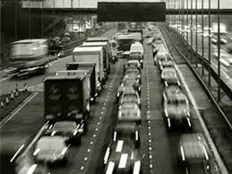

Importancia de la automatización del transporte público

1. Eficiencia
La automatización mejora la eficiencia del transporte público al reducir los tiempos de espera y los retrasos.<
Los vehículos automatizados siguen rutas predefinidas y ajustan su velocidad para maximizar el flujo de tráfico y
minimizar los embotellamientos.
Esto resulta en un transporte más rápido y puntual, lo que atrae a más pasajeros y
reduce la congestión en las carreteras.
2. Seguridad
La automatización del transporte público mejora la seguridad vial al seguir estrictamente las normas de tráfico
y evitar comportamientos peligrosos. Al eliminar el factor humano, se reducen las posibilidades de accidentes y lesiones.
3. Accesibilidad
La automatización hace que el transporte público sea más accesible para todas las personas, incluyendo aquellas
con discapacidades o limitaciones de movilidad. Los vehículos automatizados incorporan características de accesibilidad,
como rampas para
sillas de ruedas o sistemas de asistencia para personas con discapacidad visual.
4. Reducción de emisiones
La automatización del transporte público contribuye a la reducción de emisiones contaminantes al utilizar vehículos
eléctricos o híbridos. Esto reduce las emisiones de gases de efecto invernadero y contaminantes locales, mejorando la
calidad del aire en las ciudades.
5. Optimización del uso de recursos
La automatización permite una mejor gestión de los recursos del transporte público. Los sistemas automatizados pueden
ajustar la frecuencia y capacidad de los vehículos según la demanda en tiempo real, evitando la sobreutilización o infrautilización
de los recursos de transporte.